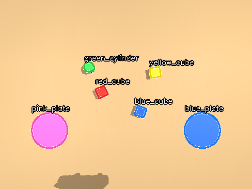
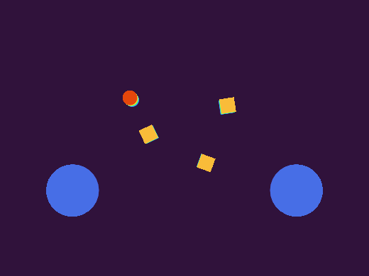
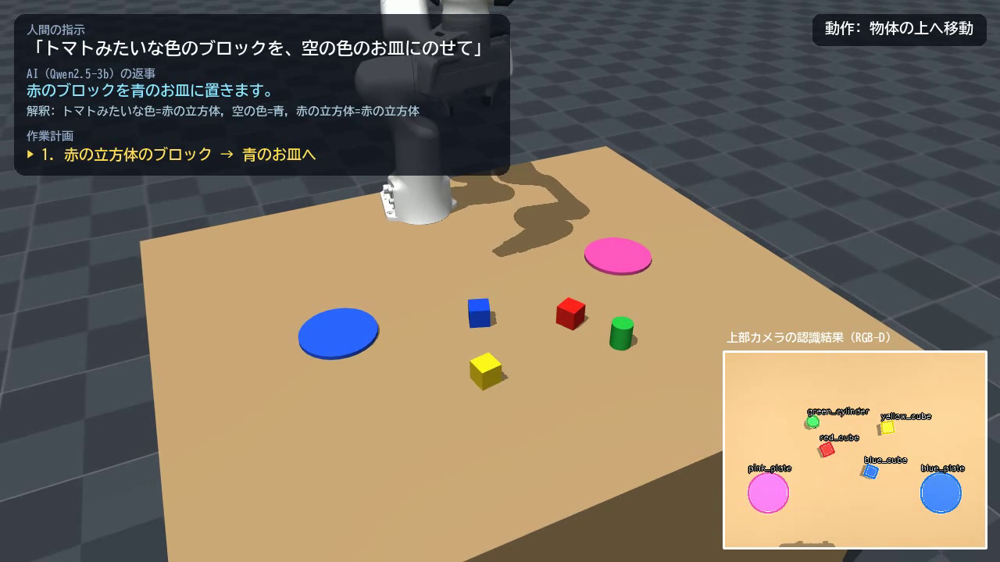
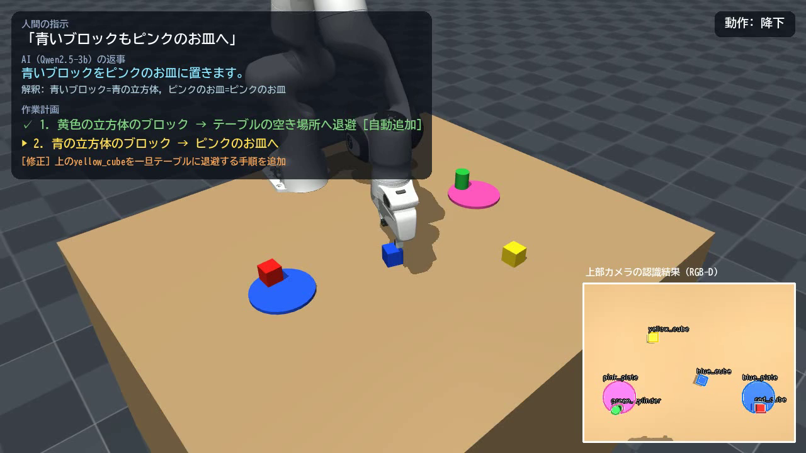

言葉で指示できる片付けロボット
ローカル LLM × RGB-D 認識 × 逆運動学による、日本語指示からのピック&プレース（MuJoCo シミュレーション）
動画 (YouTube): （Omnicampus の提出フォームに記載）
コード (GitHub): https://github.com/Takuwan-robo9/PhysicalAI2026
動作環境: Windows 11 ノート PC（Core i5-1235U、メモリ 8GB、GPU なし）／ Python 3.12、MuJoCo 3.17、llama-cpp-python 0.3
1. 課題の概要と目的
人が「トマトみたいな色のブロックを、空の色のお皿にのせて」のようにふだんの言葉で頼むだけで、ロボットアームが机の上を片付けるシステムを作った。
シミュレータ MuJoCo 上の Franka Panda（7 自由度アーム＋平行グリッパ）が、上部カメラの RGB-D 画像から物体を認識し、
ローカル LLM が指示を作業計画に変換し、逆運動学で動作を生成してピック&プレースを実行する。
目的は次の 3 点である。
- 言葉の曖昧さへの対応：比喩（「バナナ色」＝黄色）、形の言い換え（「丸いの」＝円柱）、「残り全部」のような集合的な指示を扱う。
- 安全性：LLM の出力をそのまま実行せず、物理的に実行できるかを検証し、誤りを自動修復してから動かす。
- 手軽さ：API キーも GPU も使わず、一般的なノート PC の CPU だけで動かす（オフライン・低コスト・プライバシー面で実機の家庭用途を意識）。
2. システム構成
① 認識上部カメラの RGB＋深度を 3 次元点群に逆投影。色と高さで物体を切り出し、形状・位置・向きを推定
→
② 世界モデル「何が何の上にあるか」を管理。積まれて見えなくなった物体は記憶で補完
→
③ LLM 計画Qwen2.5-3B（4bit 量子化）が指示と物体リストから JSON の手順を生成（出力形式を文法で制約）
→
④ 検証・修復存在しない物体・お皿を持つ等を除去。載っている物の下を抜く手順は順序入替／退避を追加
→
⑤ 動作生成逆運動学＋最小躍度軌道でピック&プレース。把持向きを物体の向きに合わせる
⑤ の後に ① で再認識して成功を判定し、失敗なら再挑戦する（閉ループ）
| ファイル | 役割 |
|---|
src/perception.py | RGB-D 画像からの物体認識（色・形状・3 次元位置・向き・支持面の高さ） |
src/planner.py | ローカル LLM による計画生成、JSON スキーマ制約、検証・自動修復 |
src/robot.py | MuJoCo 環境、減衰最小二乗法の逆運動学、軌道生成、ピック&プレース |
src/app.py | 世界モデル、全体ループ（認識→計画→実行→確認）、字幕付き動画の合成 |
eval/*.py | 定量評価（認識＋操作の成功率、LLM 計画の正解率） |
3. 実装と工夫した点
3.1 カメラ画像だけによる物体認識（シミュレータの正解位置は使わない）
- 真上のカメラで RGB 画像と深度画像をレンダリングし、カメラの内部・外部パラメータから全画素を世界座標に逆投影して高さマップを作る。
- HSV 色空間で色ごとに領域を分け、さらに高さで「ブロック（高い）」と「お皿（低い）」を分離する。これにより「青いブロックが青いお皿の上にある」場合も区別できる。
- 上面の点群の最小外接矩形への充填率（正方形≈1.0、円≈0.79）で立方体か円柱かを判定し、矩形の角度から向き（yaw）を推定。把持時に手先を回して面に平行につかむ。
- 透視投影では、積まれたブロックの下にあるブロックの側面だけが見えて誤検出が起きた。そこで上面が十分見えている領域だけを物体として採用し、見えなくなったブロックは世界モデルの記憶で補完した。また、各物体の高さを最初に見たときに記憶し、「上面の高さ − 物体の高さ」から置かれている面の高さを求めることで、積み上げ関係を判定した。

図1 認識結果（輪郭と推定 ID）

図2 深度から作った高さマップ（明るいほど高い）
3.2 ローカル LLM による作業計画
- API を使わず、Qwen2.5-3B-Instruct を 4bit 量子化（GGUF）して llama.cpp で CPU 推論した。当初は transformers で 0.5B モデルを試したが、精度が低く 1 回 30 秒かかり、メモリ 8GB の PC では大きなモデルを載せられなかったため切り替えた。
- 入力は「認識した物体リスト（ID・色・形・場所）」と指示文。出力は
{"interpretation", "reply", "steps":[{"pick","place"}]} の JSON。
- JSON スキーマによる制約付きデコードで、pick に書ける ID を「いま見えているブロック」だけに限定した。存在しない物体の幻覚（ハルシネーション）が構造的に起こらない。
- 解釈欄（interpretation）を先に書かせる（簡易的な Chain-of-Thought）。「トマトみたいな色=赤」と書いてから手順を決めるので、比喩の解釈が安定した。解釈は動画にも表示し、AI がなぜその行動をとったかが見えるようにした。
- 小型モデルが「丸いの」を立方体と取り違える失敗があったため、物体リストに「丸い形／四角い形」という形容を加えた。
指示: トマトみたいな色のブロックを、空の色のお皿にのせて
LLM : {"interpretation": "トマトみたいな色=赤, 空の色=青, ...",
"reply": "赤のブロックを青のお皿に置きます。",
"steps": [{"pick": "red_cube", "place": "blue_plate"}]}
3.3 検証・自動修復層（LLM を信用しすぎない）
LLM の手順を、世界モデルの「何が何の上にあるか」を使って 1 ステップずつシミュレートし、次の処理を行う。
- 除去：お皿を持ち上げる、自分の上に置く、すでに目的地にある、置き先の上が塞がっている。
- 順序の修復：上に物が載っているブロックを先に動かそうとしている場合、上の物体を動かす手順が計画内にあれば順序を入れ替え、なければ「一旦テーブルの空き場所に退避」する手順を自動で追加する。
例えば黄色を青の上に積んだ状態で「青いブロックをピンクのお皿へ」と頼むと、LLM は青を直接つかむ手順を出すが、修復層が「黄色を退避 → 青をお皿へ」に直してから実行する。
3.4 動作生成と閉ループ制御
- 手先の位置と姿勢（真下向き＋yaw）を目標とした 6 自由度の減衰最小二乗法 IK。冗長な 1 自由度は零空間でホーム姿勢に引き寄せ、不自然な姿勢を避けた。
- デカルト空間の最小躍度補間で滑らかに動かす。積み上げ時は持ち上げ高さを自動で上げる。立方体は置き先の向きに揃えて置く（グリッパを回した分だけ物体も回ることを利用）。
- お皿の上は 120° 間隔の 3 か所を置き場所とし、離すときはグリッパを全開せず約 5cm だけ開く。最初は全開にしていたため指が隣の円柱に当たって倒しており、その対策である。
- 認識の際はアームをカメラの視野外の観測姿勢に退避させ、隠れを防ぐ。各ステップの後に再認識し、目標位置にあるかで成功を判定し、失敗なら再挑戦する。
4. 評価
4.1 認識とピック&プレース（LLM なし、ランダム配置 20 試行）
物体 4 個をランダムな位置・向き（±45°）に置き、「お皿へ」「別のお皿へ」「他のブロックの上に積む」の 3 ステップを 1 試行とした。認識誤差の算出にだけシミュレータ内の真の位置を使った。
| 項目 | 結果 |
|---|
| ステップ成功率（全体） | 98.3%（59/60） |
| お皿への配置 / 積み上げ | 100.0% / 95.0% |
| 物体位置の認識誤差（平均 / 最大） | 0.34 mm / 0.69 mm |
唯一の失敗は積み上げで、円柱を立方体の上に積んだ後の再認識で円柱が見つからず（転倒・転落したと考えられる）、再挑戦もできなかった。底面の小さい円柱を積む動作は不安定であり、置く速度や高さの調整、見失ったときの探索動作が今後の課題である。
4.2 LLM 計画の正解率（15 種類の指示）
比喩・形の言い換え・「全部」・不可能な指示・積み上げ状態での指示を含むテストセットで、手順の集合と順序（物理的に実行できるか）が正解と一致した割合を測った。
| モデル（4bit 量子化） | LLM の生出力 | 検証・修復後 | 推論時間（中央値） |
|---|
| Qwen2.5-3B-Instruct | 80.0% | 93.3% | 16.0 秒 |
| Qwen2.5-1.5B-Instruct | 46.7% | 60.0% | 11.0 秒 |
- 3B モデルでは、検証・修復層によって正解率が 80.0% → 93.3% に上がった。LLM は「下のブロックを先に動かす」という物理的に不可能な順序を出しやすく、修復層がそれを直した。
- 1.5B モデルは 46.7% → 60.0% にとどまった。比喩（トマト色・バナナ色）の解釈や「全部」の列挙で誤りが多く、修復層は物理的な整合性しか直せないため、言葉の意味の理解はモデルの規模に強く依存することがわかった。
- 3B でも誤ったのは「テーブルに残っているものを全部…」（お皿の上の物体まで含めてしまう）で、状態を踏まえた集合の推論が小型 LLM の弱点である。
4.3 デモ（動画）
5 つの指示を連続で実行した（比喩による指定 → 積み上げ → 形による指定 → 不可能な指示の断り → 上に物が載ったブロックの移動）。最後の指示では、LLM が上に黄色が載った青いブロックを直接つかむ手順を出したが、修復層が「黄色を一旦テーブルに退避」を自動で追加して実行した。ピック&プレース 5/5 ステップが成功し、不可能な指示（ダンス）には手順を出さずに断った。LLM の推論時間は各指示で 48, 14, 13, 10, 12 秒（CPU）であった。

図3 指示・AI の解釈・作業計画を字幕で表示

図4 自動修復された計画の実行
5. 考察と今後の課題
- 小型 LLM の弱点は「状態」の推論：比喩や形の言い換えは 3B でもほぼ解けたが、「テーブルに残っているもの」のように、どの物体がどこにあるかを踏まえて集合を選ぶ指示は誤りやすかった。また、デモ作成中に「トマトみたいな色」を黄色と解釈したり、赤がお皿に載った状態で「青い四角」を青いお皿と取り違えたりした。物体リストの並び順・場の状態・言い回しのわずかな違いで結果が変わり、小型 LLM の判断は安定しないことがわかった（デモの指示は誤解されにくい「青いブロック」という表現に変更した）。複数回生成して多数決をとる方法や、解釈結果を認識結果と照合する検査の追加が改善策として考えられる。
- LLM ＋ ルールの役割分担が有効：LLM は言葉の意味の理解、ルールは物理的な整合性という分担にすると、正解率が上がり、危険な動作も防げた。大きなモデルを使えない環境ほど、この安全層の価値が大きい。
- 推論時間：CPU では 1 回 10〜30 秒（初回は 60 秒以上）かかった。動画では待ち時間を短縮表示している（画面に実時間を明記）。プロンプトのキャッシュや、より小さいモデルの追加学習（ファインチューニング）で短縮できる余地がある。
- 実機への展開：今回は色ベースの認識なので、照明の変化や見たことのない物体には弱い。OWL-ViT や Grounding DINO のようなオープン語彙の物体検出に置き換えれば、「マグカップ」「リモコン」など実物の名前で指示できる。また、認識・計画・IK の各層は独立しているため、SO-101 などの低価格アームにも計画層をそのまま流用できると考えられる。
6. 使用ツール・クレジット
- シミュレータ：MuJoCo 3.17 ／ ロボットモデル：MuJoCo Menagerie の Franka Emika Panda（Apache-2.0）。シーン・物体・カメラは自作。
- LLM：Qwen2.5-3B-Instruct / 1.5B-Instruct（GGUF Q4_K_M）、推論：llama.cpp（llama-cpp-python）。
- 画像処理：OpenCV、動画：FFmpeg、字幕描画：Pillow。
- 開発にはコーディング支援 AI（Claude Code）を利用した。